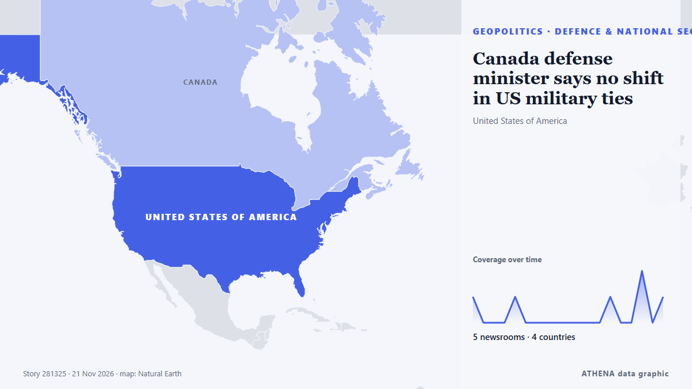

Άμυνα & εθνική ασφάλεια
ΧορηγούμενοΠαρουσιάζεται από  Cybernetics and Artificial Intelligence Lab Welcome to the Cybernetics and Artificial Intelligence Laboratory, established at the Department of Business Administration of the National and Kapodistrian University of Athens. The lab is headed by Professor Dimitrios Thomakos. The lab aims to do research that can be published in top venues. Our research uses tools and methods of Artificial Intelligence, and lies in the following areas: - Forecasting - Decision making - Cyber security - Finance We are always looking forward to collaborating with exceptional students!
Cybernetics and Artificial Intelligence Lab Welcome to the Cybernetics and Artificial Intelligence Laboratory, established at the Department of Business Administration of the National and Kapodistrian University of Athens. The lab is headed by Professor Dimitrios Thomakos. The lab aims to do research that can be published in top venues. Our research uses tools and methods of Artificial Intelligence, and lies in the following areas: - Forecasting - Decision making - Cyber security - Finance We are always looking forward to collaborating with exceptional students!
| 8 Νοε | 0 |
|---|---|
| 9 Νοε | 0 |
| 10 Νοε | 0 |
| 11 Νοε | 0 |
| 12 Νοε | 0 |
| 13 Νοε | 0 |
| 14 Νοε | 0 |
| 15 Νοε | 0 |
| 16 Νοε | 0 |
| 17 Νοε | 7 |
| 18 Νοε | 5 |
| 19 Νοε | 4 |
| 20 Νοε | 3 |
| 21 Νοε | 2 |
Οι τίτλοι των ειδήσεων παρουσιάζονται στα αγγλικά, όπως δημοσιεύτηκαν.

Canada defense minister says no shift in US military ties
Classified Pentagon memo escalates tensions with Ottawa, reports The Washington Post. από Anadolu Agency (English)
US offers Ukraine membership in Nato if it gives up land to Russia: report
Trump had previously ruled out the possibility of Nato membership for Ukraine, but is struggling to reach a breakthrough in mediated talks. από The Independent
VP trial Day 45: Defense to present DTI, FDA, Citem witnesses on Cale88
MANILA, Philippines — The defense team of Vice President Sara Duterte is set to present three government officials as witnesses on Friday, the 45th day of her impeachment trial, focusing on the… από Philippine Daily Inquirer
Zelensky Urges Pentagon to Unblock Patriot Deliveries
President Volodymyr Zelensky urged the Pentagon to release expected PAC-2 and PAC-3 Patriot missile deliveries on Nov. από Kyiv Post
Wreck of Australia's first warship built at home found 128 years after sinking
The wreck of Australia’s first Australian-built warship, HMCS Spitfire, has been found 128 years to the day after it sank off the country’s north coast. από ABC News (International)
This Is the Powerful C-130 Hercules That the United States Has Just Donated to Colombia
As part of the bilateral cooperation commitments between the United States and Colombia, Secretary of War Pete Hegseth delivered a C-130 Hercules aircraft to the Colombian Aerospace Force (FAC) this… από Colombia One
Watchdog flags fraud, failed Pentagon audit as defense priorities
Days after the Pentagon failed its ninth consecutive audit, its oversight office ranked eliminating fraud and achieving a clean financial audit among the Defense Department’s most pressing strategic… από Military Times
Russia's former deputy defense minister sentenced to 10 years in prison
Moscow’s Zamoskvoretsky District Court sentenced Ruslan Tsalikov, Russia’s former first deputy defense minister, to 10 years in a high-security penal colony in a corruption case. από Meduza (English)
Yes, Bulgaria Calls for Emergency Security Council Meeting, Parliamentary Hearing on Black Sea Attacks
The United Nations Security Council will convene a high-level meeting on Monday, November 23, to discuss Russia's war against Ukraine. από Ukrinform (English)
Bahrain says air defences intercepted Iranian attacks
Bahrain's defence force accused Tehran of maintaining a 'systematic hostile approach' towards the kingdom, which hosts the US Navy's Fifth Fleet. από Free Malaysia Today
South Korea Launches Advanced 3,600-Tonne Stealth Frigate Equipped With Indigenous Radar
South Korea has launched its new 3,600-tonne frigate Pyeongtaek at Hanwha Ocean's Geoje shipyard, fitted with a homegrown four-panel phased array radar and a stealth mast. από Marine Insight
Fincantieri’s WASS signs underwater defence agreement in India
Fincantieri’s subsidiary WASS Submarine Systems has signed a Memorandum of Understanding (MoU) with India’s Bharat Dynamics Limited (BDL) to explore cooperation in underwater defence systems. από Container News
Hegseth to visit Colombia on Wednesday to deliver military equipment
BOGOTA, Nov 17 - US Defense Secretary Pete Hegseth will travel to Colombia on Wednesday to deliver military equipment and discuss security cooperation, Colombia's defense minister said on Tuesday. από The Straits Times
US hits out at Ukraine’s ‘deep strikes’ against Russia
US defence official Elbridge Colby said support for Kyiv should be focused on bolstering the front line. από The Straits Times
Saudi crown prince meets US CENTCOM chief amid escalating Houthi hostilities
Nov 19 - Saudi Crown Prince Mohammed bin Salman met US Central Command chief Admiral Brad Cooper in Riyadh, Cooper's third publicly reported visit to Saudi Arabia since hostilities between the… από The Straits Times
Japan scrambles fighter jets after Russian aircraft breach airspace amid rising Pacific tensions
Suspected Russian aircraft entered Japanese airspace near Okinoshima, and Prime Minister Sanae Takaichi warned of instability at the Quad Leaders Summit. από Fox News (World)